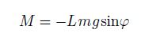
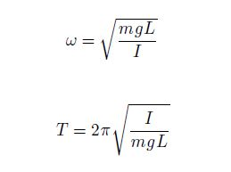
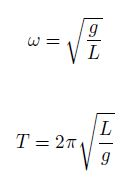

Wahadło matematyczne
Wahadło matematyczne to przykłady oscylatora harmonicznego, którego drgania zachodzą w płaszczyźnie pionowej, pod wpływem siły grawitacji.Jest to przykład wahadła mającego postać ciała o masie m zawieszonego na jednym z końców nierozciągliwej linki o znikomej masie i o długości L, której drugi koniec zamocowany jest w stałym punkcie. Przykładem takiego wahadła jest układ ciężarek, wykonujący drgania w płaszczyźnie pionowej w kierunku z lewa na prawą.
Wahadło matematyczne - rozkład sił
Zgodnie z poniższym rysunkiem siłami działającymi na ciężarek są siła naprężenia linki Fl oraz siła ciężkości Fg,
skierowana równolegle do linii przerywanej oznaczającej położenie równowagi układu ciężarek - linka.
Po rozłożeniu siły Fg na składowe otrzymujemy składową radialną Fg cosφ, skierowaną przeciwnie do siły Fl
oraz składową Fg sinφ - styczną do toru ruchu ciężarka. Podobnie jak w przypadku wahadła torsyjnego,
także i w tym przypadku na ciężarek wykonujący drgania działa moment siły M, dążący do przywrócenia
położenia równowagi ciężarka, o wartości:

Za powstanie momentu siły M, działającego przeciwnie do wychylenia ciężarka (stąd znak minus w powyższym wyrażeniu),
odpowiada składowa Fg sinφ. W przybliżeniu małych kątów (φ ≤ 5o), tj. drgań o małej amplitudzie, częstość kołową
ω oraz okres T drgań wahadła matematycznego możemy wyznaczyć korzystając z poniższych wzorów:

gdzie:
m - masa ciężarka,
g - przyspieszenie ziemskie,
L - odległość dzieląca punkt zawieszenia
wahadła od środka jego masy równa długości linki,
I - moment bezwładności wahadła względem jego punktu zawieszenia.
Częstość kołowa i okres drgań wahadła matematycznego - wzór
Zapisując moment bezwładności wahadła jako I = mL2 otrzymamy:  Zasadniczą różnicą pomiędzy wahadłem matematycznym a wahadłem fizycznym jest rozkład ich masy. W przypadku wahadła matematycznego, jego całkowita masa skupiona jest w ciężarku zawieszonym na lince, znajdującym się w odległości L, odpowiadającej długości linki, od punktu jego zawieszenia. Rozkład masy wahadła fizycznego, nazywanego również wahadłem rzeczywistym, jest nieco bardziej skomplikowany w porównaniu z wahadłem matematycznym.